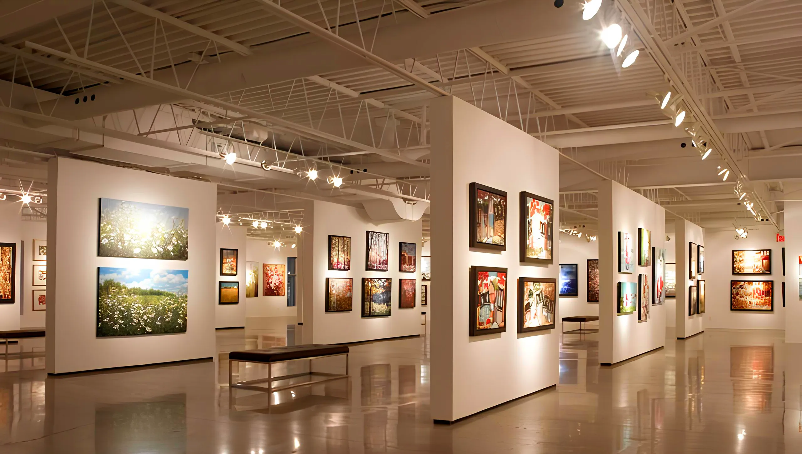
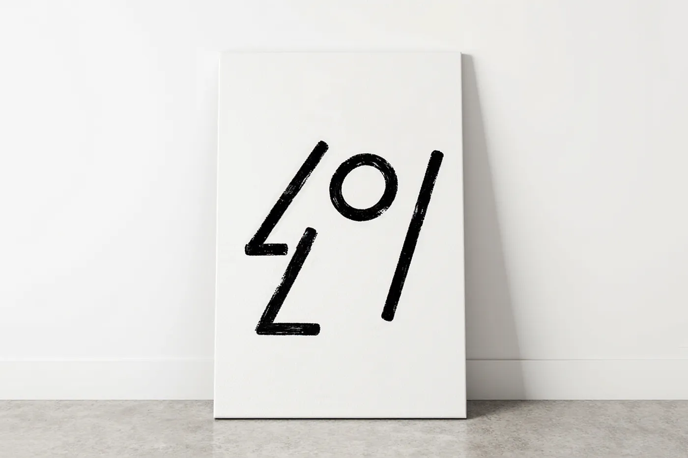
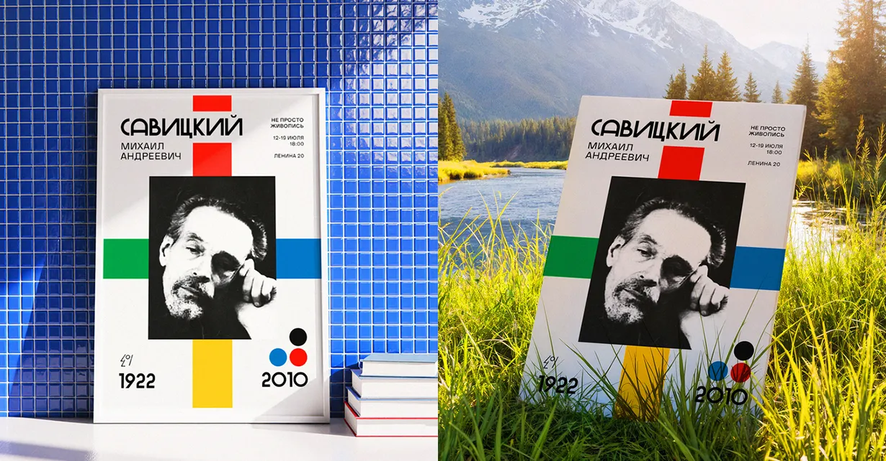
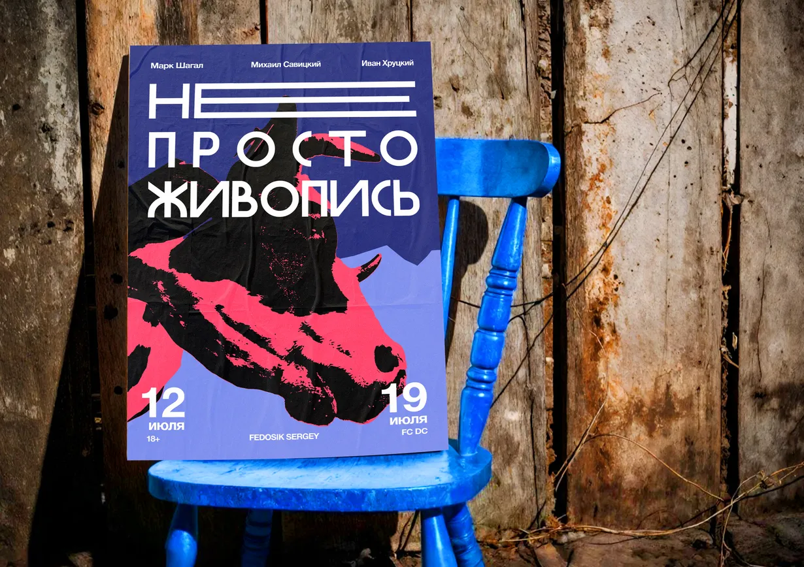
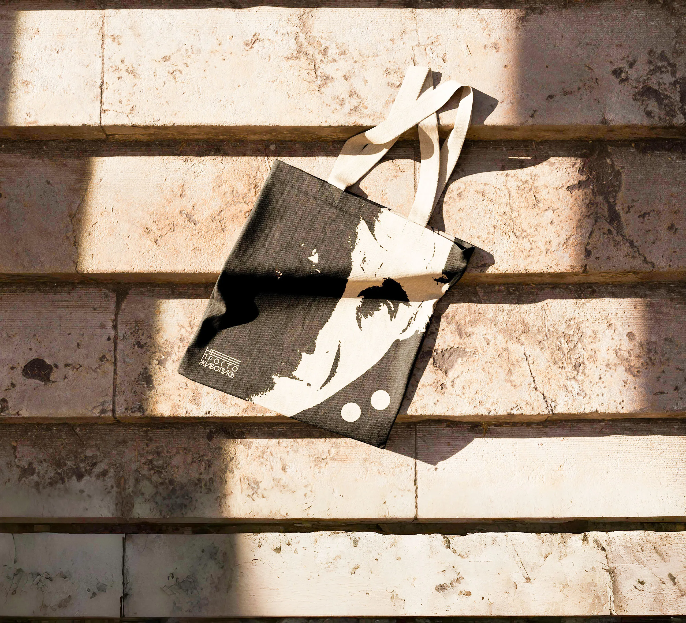

БелЖивапіс Минск

Это больше, чем выставка. Это приглашение взглянуть на белорусскую живопись иначе не как на музейный экспонат прошлого, а как на живую, пульсирующую ткань нашей культурной идентичности.
Логотип выставки - геометричный профиль человека, вдохновлённый образами Марка Шагала. Он будто собран из обрывков форм, оставляя ощущение продуманной незавершённости.

Исследование и сбор ассоциаций - это первый шаг в рождении уникального образа. Здесь рождаются смыслы, эмоции и символы, которые станут сердцем будущего логотипа.


Для мероприятия разработаны варианты дизайна входного билета. Они служат дополнением к общей айдентике, частично вдохновлённой принципами Bauhaus - ясной геометрией, простыми формами и функциональностью.

Цветовая палитра выбрана не случайно. Чистые оттенки отсылают к визуальной строгости и функциональности, характерным для выбранной эстетики.